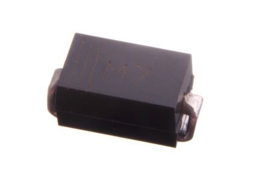
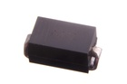
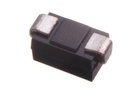

SMD (DO-214) 1 Amp Diode - DS201

Summary
Name: SMD (DO-214) 1 Amp Diode
ID: DIOD-D214-X-A01-01
Hex ID: DS201
WebPage: https://github.com/oomlout/oomlout-OOMP/wiki/DIOD-D214-X-A01-01
Short URL: http://oom.lt/DS201
Revision History: https://github.com/oomlout/oomlout-OOMP/blob/master/parts/DIOD-D214-X-A01-01/
| Type |
Size |
Color |
Description |
Index |
DIOD
Diode |
D214
SMD (DO-214) |
X
|
A01
1 Amp |
01
|
Images


About
This is a commonly used general purpose high current (1A) surface mount diode.
Common Uses
This part is commonly used as:
*Used on the Arduino UNO board to protect agaionst inserting the DC power supply backwards.
Specifications
| Info |
Value |
| Type |
Diode |
| Size |
SMD (DO-214) |
| Description |
1 Amp |
| Width |
5.6 mm |
| Height |
2 mm |
| Length |
2.75 mm |
| Package Marking |
M7
| Number of Pins |
2 |
|
Extra Details
Spotted a mistake, want to add more? Let us know oomp@oomlout.com
All images and resources are licensed [CC BY-SA] unless otherwise stated (ie. the datasheets)